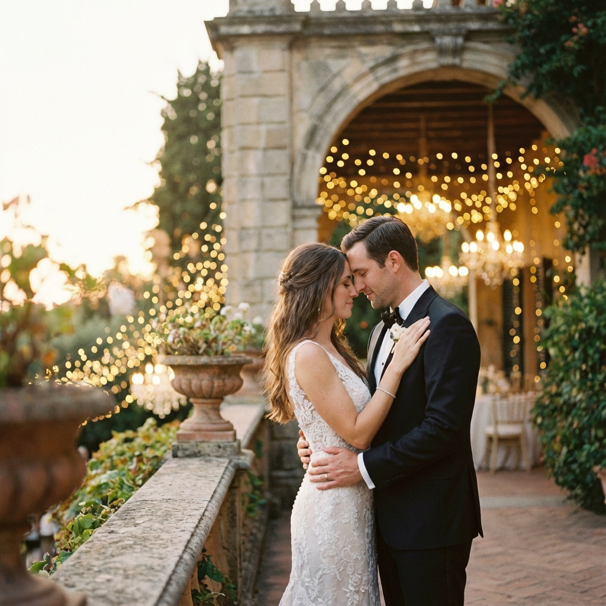
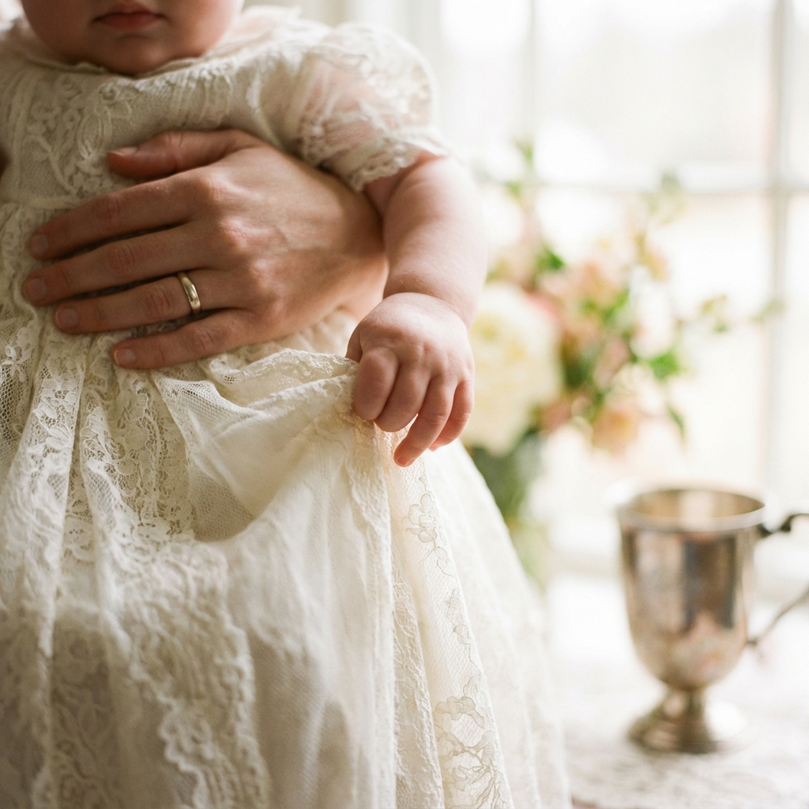
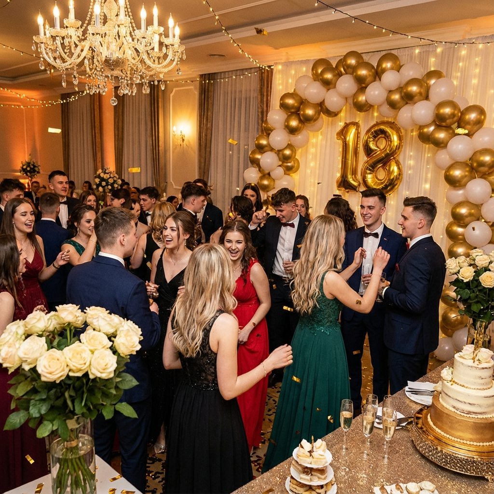

Utrwalam momenty,
które zostają na zawsze
Profesjonalna fotografia: Wesela • Chrzciny • 18-nastki
Moja Twórczość



O mnie
Cześć! Jestem Ewelina i pasjonuję się chwytaniem ulotnych chwil. Fotografia dla mnie to nie tylko praca, to sposób na opowiadanie historii Twoich najważniejszych dni.
Specjalizuję się w reportażach ślubnych oraz imprezach okolicznościowych. Moim celem jest, abyś patrząc na zdjęcia po latach, czuł te same emocje, co w dniu ich wykonania.
0
Zrealizowanych sesji
0
Zadowolenia %
0
Lat doświadczenia
Oferta
Reportaż Ślubny
od 2500 zł
- Przygotowania + Ceremonia
- Wesele do oczepin (01:00)
- 400+ zdjęć po autorskiej obróbce
- Galeria online dla gości
Chrzciny / 18-nastki
od 600 zł
- Reportaż z całej uroczystości
- Mini sesja plenerowa w dniu eventu
- 50+ zdjęć w pełnej rozdzielczości
- Pendrive w eleganckim pudełku
Sesje Indywidualne
od 300 zł
- 1-2 godziny kreatywnej sesji
- Dobór lokalizacji lub studio
- 15 starannie obrobionych ujęć
- Wysokiej jakości wydruki 15x23
Opinie Klientów
"Ewelina stworzyła dla nas przepiękną pamiątkę z naszego ślubu. Jej spokój i profesjonalizm pozwoliły nam czuć się swobodnie przed obiektywem. Zdjęcia przeszły nasze najśmielsze oczekiwania!"
Anna i Piotr"Najlepsza fotografka z jaką mieliśmy okazję współpracować. Potrafi uchwycić emocje, których sami nie zauważyliśmy. Chrzest naszej córki został uwieczniony w sposób bajkowy."
Karolina i Marek"Pełen profesjonalizm i świetne podejście do młodych ludzi. Moja 18-nastka została sfotografowana idealnie – dynamiczne ujęcia, świetne kolory i super atmosfera podczas sesji."
Marta S."Zdjęcia z sesji narzeczeńskiej są po prostu magiczne. Ewelina ma niesamowite oko do światła i detali. Czujemy się dumni, pokazując te zdjęcia rodzinie."
Kasia i Tomek"Polecam z całego serca! Ewelina to nie tylko świetna fotografka, ale też przemiła osoba. Współpraca przebiegła bezstresowo, a efekty końcowe zachwyciły wszystkich gości."
Michał W.Częste Pytania
Jak długo czeka się na gotowe zdjęcia?
+Czy pracujesz z drugim fotografem?
+Czy posiadasz upoważnienie do fotografowania w kościele?
+Terminy 2026
Planujesz uroczystość w nadchodzącym roku? Sprawdź aktualny stan rezerwacji: